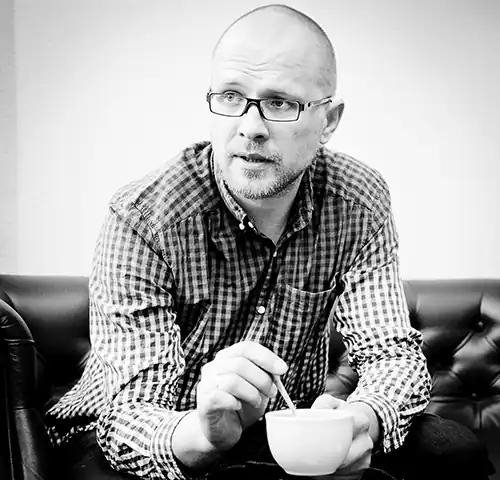

Андрі́й Володими́рович Бо́ндар (нар. 14 серпня 1974, Кам'янець-Подільський, Україна) — український поет, публіцист, перекладач. Лауреат премії видавництва "Смолоскип" (1997). Чоловік Софії Андрухович.
Закінчив 1991 року Кам'янець-Подільську середню школу № 9. У 1991—1994 роках навчався на філологічному факультеті Кам'янець-Подільського педагогічного інституту (нині Кам'янець-Подільський національний університет). 1994 року вступив до Києво-Могилянської академії (закінчив 2001 року).
Головний редактор газети Асоціації українських письменників (АУП) "Література плюс" (1998—2000), заступник головного редактора журналу "Єва" (2001—2002). Редактор літературної сторінки "Книжкова лавка" в газетах "Дзеркало тижня" (2001—2007), "Газета по-українськи". Колумніст "Газети по-українськи" (2006). Дружина — письменниця Софія Андрухович. Донька Варвара (народилася 10 березня 2008 року). На Євромайдані перебував з перших днів протестів. Після перейменування на Проспект Степана Бандери Московського проспекту в Києві 7 липня 2016 року сказав, зокрема: "Це помилка і дурість, … ця постать досі викликає в нашому суспільстві різні думки. Також це прямий шлях до конфронтації з поляками". Як поет дебютував 24 листопада 1993 року добіркою віршів у газеті "Подолянин" (Кам'янець-Подільський). Перша велика поетична публікація — 1997 року в журналі "Сучасність". Поезія "Весіння єресь" (Київ: Смолоскип, 1998). "Істина і мед" (Одеса: Астропринт, 2001). "MASKUL'T" (Київ: Критика, 2003) (співавтори: Сергій Жадан та Юрій Андрухович). "Примітивні форми власності" (Львів: Піраміда, 2004). "100 тисяч слів про любов, включаючи вигуки" (Харків: Фоліо, 2008) (співавтори: Лариса Денисенко, Юрій Андрухович, Софія Андрухович, Юрій Винничук, Володимир Єшкілєв, Сергій Жадан, Богдан Жолдак, Оксана Забужко, Іздрик, Ірена Карпа, Андрій Курков, Лада Лузіна, Таня Малярчук, Марія Матіос, Костянтин Москалець, Галина Пагутяк, Світлана Пиркало, Світлана Поваляєва, Юрко Покальчук, Ігор Померанцев, Тарас Прохасько, Наталка Сняданко, Олесь Ульяненко, Володимир Цибулько). "Метаморфози : 10 українських поетів останніх 10 років" (Харків: Клуб сімейного дозвілля (КСД), 2011) (співавтори: Богдана Матіяш, Сергій Жадан, Маріанна Кіяновська, Олег Коцарев, Галина Крук, Дмитро Лазуткін, Світлана Поваляєва, Мар'яна Савка, Остап Сливинський). Пісні пісні. Збірка низької поезії та примітивної лірики / Укладач Олександр Стукало. — Чернівці: Meridian Czernowitz; Книги — ХХІ, 2014. — 104 с. Вірші Андрія Бондаря перекладено англійською, німецькою, французькою, польською, шведською, португальською, румунською, хорватською, литовською, білоруською мовами. Проза Книга оповідань "13 різдвяних історій" (перед Різдвом 2014 р.) Збірка малої прози "І тим, що в гробах" (Львів: Видавництво Старого Лева, 2016) Переклади Вітольд Ґомбрович "Фердидурке" (Київ: Основи, 2002) Марек Лавринович "Погода для всіх" (Київ: Нора-друк, 2005) Міхал Вітковський "Хтивня" (Київ: Нора-друк, 2006) Павел Смоленський "Похорон різуна" (Київ: Наш час, 2006) Оля Гнатюк "Прощання з імперією" (Київ: Критика, 2006) (передмова, розділи I—III) Богдан Задура "Поет розмовляє з народом" (Харків: Фоліо, 2007) (співперекладачі: Дмитро Павличко та Микола Рябчук) Катажина Ґрохоля "Ніколи в житті!" (Київ: Наш час, 2008) Пйотр Заремба "Пляма на стелі" (Київ: Нора-друк, 2008) Катажина Ґрохоля "Серце на перев'язі" (Київ: Наш час, 2009) Войцех Тохман "Ти наче камінь їла" (Київ: Наш час, 2009) Катажина Ґрохоля "Я вам покажу!" (Київ: Наш час, 2010) Маріуш Щиґел "Зроби собі рай" (Київ: Темпора, 2011) Ед Стаффорд "Уздовж Амазонки. 860 днів. Неможливе завдання. Неймовірна подорож." (Київ: Темпора, 2012) Юстина Соболевська "Книжка про читання" (Львів: Видавництво Старого Лева, 2014) Пітер Померанцев "Нічого правдивого й усе можливе" (Львів: УКУ, 2015) Вітольд Ґомбрович "Транс-Атлантик" (Львів: Видавництво Старого Лева, 2015) Есеїстика "Авторська колонка" (спільно із Миколою Рябчуком, Світланою Пиркало, Віталієм Жежерою) (Київ: Нора-друк, 2007). "Морквяний лід" (збірка, 2012). "Церебро" (Львів: Видавнцтво Старого Лева, 2018) Укладач антологія молодої української поезії "Початки" (1998) білінгвістична антологія української поезії "Протизначення" (Львів: Кальварія, 2001) (спільно з Тетяною Доній) "Сучасна світова лесбі/ґей/бі література. 120 сторінок содому" (2009) (спільно з Іриною Шуваловою, Альбіною Поздняковою, Олесем Барлигою)